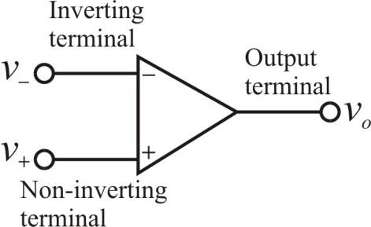

Since the op-amp is ideal, the voltage at the non-inverting terminal is equal to the voltage at the inverting terminal. Therefore,
Therefore, the measured voltage value at the positive terminal,  is .
is .
It is given that; the op-amp is an ideal one.
The voltage at the output terminal of the op-amp is,
The voltage at the inverting terminal of the op-amp is,
Draw the circuit diagram of ideal op-amp.

Since the op-amp is ideal, the voltage at the non-inverting terminal is equal to the voltage at the inverting terminal. Therefore,
Therefore, the measured voltage value at the positive terminal, is .
It is given that; the new measure value at the positive terminal is,
Write the expression for voltage gain of the amplifier.
Substitute for  , for and for
, for and for  .
.
Therefore, the actual voltage gain,  of the amplifier is .
of the amplifier is .